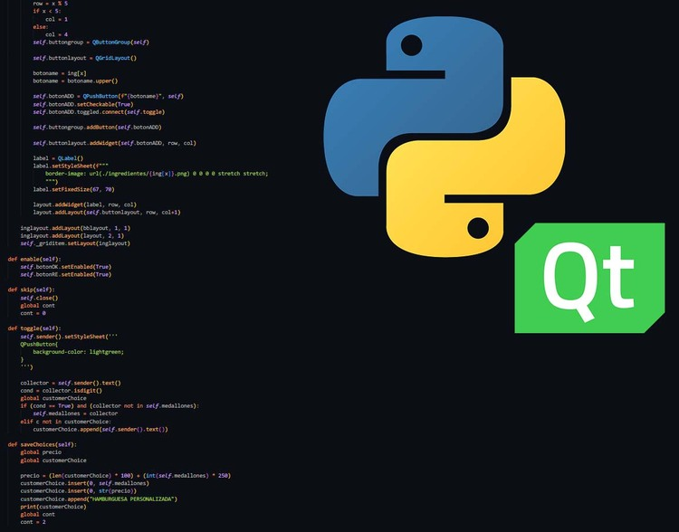

Este proyecto es el resultado de la colaboración entre dos amigos como examen integrador final de primer año de programación. El programa, hecho en Python 3.10, utiliza la biblioteca PySide6 como binding para las herramientas de interfaz gráfica de usuario (GUI) de Qt.

La aplicación recrea el menú de autoservicio de una cadena de comida rápida ficticia llamada Pyburger. Una vez que se selecciona una hamburguesa, se muestra una foto junto a una breve descripción del producto y sus ingredientes. Después de confirmar la compra, se genera un recibo que incluye la fecha, hora, la orden completa del cliente y el monto total a pagar.
El programa permite a los clientes personalizar sus hamburguesas con ingredientes a su elección, y el administrador puede agregar o eliminar hamburguesas e ingredientes del menú desde un panel protegido con contraseña. Todo se almacena en JSONs y el programa está diseñado para ser flexible y resistente, incluso si se agregan o eliminan ingredientes o hamburguesas.